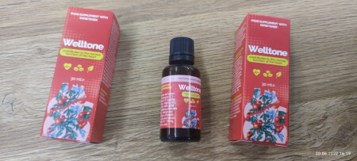
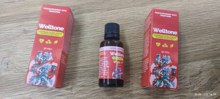
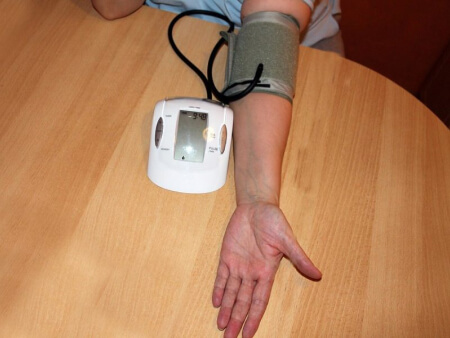
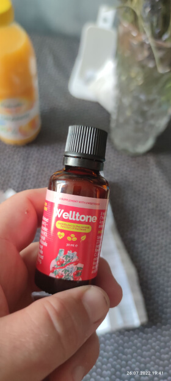

Gydytoja kardiologė: šaltis ir kvėpavimo takų infekcijos – širdžiai pavojingas duetas
«Пенсионеры в моей стране доживают до 80-90 лет в отличном здравии, без инфаркта, инсульта и гипертонии», — рассказ врач-долгожитель из Японии. В Японии знают способ продлить жизнь и стабилизировать давление с помощью ДОМАШНЕЙ ауторегенерации.
Известный японский врач-долгожитель рассказал, как в его стране обычные пенсионеры доживают до 80-90 лет, что считается нормой, а не исключением и везением. Но ситуация в Литве совсем обратная. Министерство здравоохранения уже всерьез занялось вопросом сердечно-сосудистых заболеваний в стране. Через 5 лет смертность от болезней сердца достигнет 78% от всего числа смертей. Специалист из Японии прилетел в Литву, чтобы решить проблему, которая вот-вот станет самой обсуждаемой в стране. Сегодня доктор Хироми Шинья расскажет всю правду о причинах гипертонии, лечении и недобросовестных медиках Литвы.
Журналист:
- Здравствуйте, доктор, очень рады видеть и слышать вас сегодня. Вы видите, насколько ужасна ситуация в Литве на сегодня. Но людям очень интересно знать, как так получилось, что такой огромный
процент смертности в стране приходится на сердечно-сосудистые заболевания?
Доктор:
- Здравствуйте, это мой долг помогать странам, которые еще не знают о том, что знают люди в Японии. Просто мы немного раньше столкнулись с этой проблемой, решили ее, и теперь делимся со всем
миром.
Все дело в том, что люди забыли, что их тело — это сосуд, который накапливает как хорошие вещества, так и плохие. И если мы научимся правильно балансировать это, мы будем жить очень долго и счастливо.
Вы только задумайтесь: основной причиной возникновения сердечно-сосудистых заболеваний, которые приходят с возрастом, является ХОЛЕСТЕРИН. Холестерин оказывается самым опасным веществом на планете. Этот холестерин убивает больше людей, чем алкоголь, никотин и наркотики вместе взятые.
В 94% случаев, если человек умирает до 70 лет, причиной становится «плохой» холестерин. Он еще называется липопротеиды низкой плотности.
Холестерин вредит здоровью. Если бы холестерин не накапливался в сосудах, человек легко мог бы прожить до 100 лет.
Как можно представить холестерин в реальной жизни? Очень просто: оставьте сковородку, на которой вы жарили мясо на несколько дней. Этот жир застыл, осел на сковороде так, что через неделю будет просто невозможно его вымыть. Это же и происходит в вашем организме. К 50-ти годам холестерина становится настолько много, что внутренний просвет артерий сужается на 50%!
Гораздо опаснее, когда холестерин полностью закупоривает мелкие кровеносные сосуды, пронизывающие все ткани. В результате ухудшения кровоснабжения развиваются патологические процессы во внутренних органах. И это является основой для развития хронических заболеваний.
ХОЛЕСТЕРИН ИМЕННО ЗАПУСКАЕТ ЦЕПНУЮ РЕАКЦИЮ СТАРЕНИЯ В ОРГАНИЗМЕ. И именно закупорка сосудов укорачивает срок жизни человека, который определила ему природа.
А многие люди даже не догадываются, что самые страшные болезни, о которых мы слышим вокруг — это тоже холестерин.
Я уверен, что многие слышали про эмболию и тромбоз — основные причины летального исхода при заболевании сосудов. Эмбол блокирует просвет сосуда, из-за чего ткани и органы начинают страдать от ишемии, что ведет к отмиранию клеток. Также среди заболеваний артерий встречаются: дисплазия, свищи, некроз, артериит, аортит, ангиопатия.
И ужасные последствия холестерина, которые приводят к варикозной болезни, флебиту и тромбофлебиту. Варикозу подвержены не только нижние конечности, но и вены пищевода, желудка, таза, мошонки, вульвы, подъязычные вены. Как и артерии, вены могут страдать от тромбоза, сужения и закупорки, а об этом знают немногие.
К сосудистым болезням относят и заболевания лимфатических сосудов. Среди самых серьезных патологий следует отметить лимфедему — скопление жидкости в межклеточном пространстве.
Журналист:
- Звучит все действительно устрашающе, но ведь фармацевты каждый день трудятся для того, чтобы в 21 веке мы боролись с болезнями с помощью лекарственных средств. Почему в Литве они не
эффективны?
Доктор:
- Да, фармацевты действительно трудятся, но больше над достатком в своем кошельке, а не над здоровьем граждан. И это ужасная правда, о которой тоже мало кто говорит.
И еще одна правда, которую вам мало где скажут, но которая всплывает на поверхность, как только я ознакомился с карточками больных гипертонией, лечившихся в одной из больниц Вянты.
«Лекарства, которые назначают в Литве, больше похожи на наркотики, нежели на спасение от сердечно-сосудистых заболеваний!»
Человек принимает таблетку, и его состояние улучшается. Когда действие лекарства прекращается, ваше кровяное давление снова повышается. Так действуют все наркотики. Чтобы чувствовать себя хорошо, нужно получить новую «дозу». По сути, это легальный яд. Ничего не лечит, а в некоторых ситуациях даже ухудшает ситуацию, так что за обезболивающим надо возвращаться!
Самое главное понимать, что такие «химические» продукты нужны и важны в экстренных ситуациях. В таких случаях они спасают жизни. Например, в Первую мировую войну героин применяли на поле боя, чтобы помочь раненым пережить болевой шок.
Но постоянный прием таких таблеток не только вызывает привыкание, но и разрушает ваш организм, не оставляя ему шансов побороть болезнь самому. Вы пьете больше, и больше таблеток, а ваше состояние становится только хуже. Знакомо? Тогда я вам точно смогу помочь!
Журналист:
- Но как так получилось, что в Японии люди живут до 100 лет без химии и больниц. В чем секрет их долголетия, и могут ли люди в Литве приблизиться к подобному результату?
Доктор:
- Да, люди Литвы могут забыть о сердечно-сосудистых заболеваниях без приема химикатов и не травить свою жизнь.
В Японии уже каждый второй человек 40+ знает про «активные молекулы кислорода».
Двое японских ученых были удостоены Нобелевской премии за исследования в этой области. Сегодня «молекулы активного кислорода» активно используются в мировой медицине.
Да, я гордо могу сказать, что моя страна — рекордсмен по средней продолжительности жизни. Дожить до 100 лет в Японии — это не чудо, а обычное дело, которому уже никто не удивляется.
Врач со своим 79-летним пациентом, который полностью избавился от гипертонии. Ему не грозит инсульт и инфаркт! Он готов играть с правнуками.
Если раньше японцы чистили сосуды растениями, применяя гимнастику и йогу, то теперь применяют специальные лекарства на основе «активного кислорода». Сегодня мы видим результат таких решений. С 1965 года сами японцы стали уделять большое внимание очистке сосудов в возрасте 40-50 лет, после того как была принята Национальная программа здоровья и долголетия. В этой программе очистка сосудов выделена в отдельную юридическую статью.
Журналист:
- Это что-то новое, но не все так просто. Да, жители Литвы теперь знают про «активные молекулы кислорода», но как они поймут, что именно сейчас то время, когда нужно их применить?
Доктор:
- Все просто и здесь, стоит только быть чуть внимательнее к сигналам своего тела, и оно все расскажет.
Если вы обнаружили хотя бы 2 симптома из этого списка, то вам немедленно нужно действовать, иначе прямо сейчас вы сокращаете свою жизнь, которую могли бы жить полноценно:
- отек после ночного сна;
- шум в ушах;
- боли в суставах;
- головокружение;
- бессонница ночью и сонливость днем;
- чувство постоянной усталости;
- ухудшение зрения;
- ухудшение памяти;
- варикозное расширение вен;
- одышка;
- частые проблемы с желудочно-кишечным трактом;
- проблемы с избыточной массой тела.
Вы еще сомневаетесь в том, что немедленно нужно очищать сосуды?
Журналист:
- Кажется, и мне пора задуматься о чистке своих сосудов. Но как это сделать на практике?
Доктор:
- Японцы не любят все усложнять. Если они находят то, что им помогает — они быстро внедряют это в свою жизнь и живут счастливо. Так и придумали японское средство Welltone.
Как оно работает? Вам нужно всего лишь 5-7 недель приема средства, и вы почувствуете, что избавляетесь от всех вышеперечисленных болезней. Заметьте, не симптомов, а болезней! Вы наконец почистите свои сосуды от холестерина и нормализуете давление.
Журналист:
- Очень впечатляет! Но как действует этот продукт?
Доктор:
- У Welltone просто невероятные свойства. Продукт действует на сосуды в 3 этапа:
- Помогает расщеплять холестериновые бляшки;
- Помогает «починить» повреждение стенки сосуда;
- Положительно влияет на проведение нервных импульсов от головного мозга.
Восстановление кровотока и укрепление стенок сосудов запускает цепную реакцию регенерации организма. Включаются скрытые иммунные силы, и организм начинает восстанавливаться. Только представьте, вы не лишаете свой организм возможности восстановиться самому. Он живет, работает, очищается!
Этот процесс самовосстановления называется ауторегенерацией. Эти механизмы заложены природой, а продукт является катализатором, ключом, помогающим «запустить» ауторегенерацию.
После курса Welltone вы забудете о высоком давлении. Вот, что вы получите:
-
Стабильное артериальное давление как в 30 лет.
Во-первых, продукт полностью снимает высокое кровяное давление. Через 7 недель регулярного применения Welltone сосудистая сеть организма полностью обновляется. Кровеносные сосуды станут гибкими и сильными. Обновленные кровеносные сосуды компенсируют дисбаланс, вызванный нервами или физическими упражнениями, и поддерживают стабильное кровяное давление около 120/80. -
Улучшение работы мозга
После курса Welltone обычно наблюдается улучшение мозгового кровообращения на 73%. Улучшается память, нет шума в ушах и головных болей. -
Повышение остроты зрения, восстановление роговицы
Острота зрения улучшается на 0,5–2,1 единицы и нормализует глазное давление. -
Устранение отечности
Правильная функция почек и выведение жидкости из организма могут быть восстановлены. Почки не задерживают воду и нет необходимости принимать диуретики, вы точно забудете о варикозе. -
Нет больше мучительного геморроя и простатита.
Именно эти болезни связаны с нарушением кровотока и закупоркой сосудов. -
Восстановление работы сердца.
Очищение аорты благотворно влияет на тонус сердечной мышцы. В 93% случаев устраняется тахикардия, и в 99% излечивается ишемия.
Журналист:
- Поразительный эффект, и, что очень важно, за короткий срок. Но как купить Welltone, если его нет на полках обычных аптек?
Доктор:
- Да, это правда. Welltone выпускается в небольших, ограниченных количествах, и именно поэтому до аптек он просто не доходит.
В обычных аптеках и больницах вам не получить Welltone. НО ВЫ МОЖЕТЕ ЗАКАЗАТЬ ЛЕКАРСТВО В НАШЕЙ КЛИНИКЕ. Для этого на сайте необходимо заполнить заявку на получение лекарства. Часть купленного
лекарства мы решили отложить на эту программу. Хотя, это не большое количество пакетов, поэтому он не будет доступен для всех, кто звонит. По этой причине тот, кто заказывает первым, может
получить лекарство.
Журналист:
- Какие условия получения Welltone?
Доктор:
- Вам нужно находиться на территории Литвы. Мы не отправляем Welltone за пределы страны.
- Вы можете заказать Welltone ТОЛЬКО ДЛЯ ЛИЧНОГО ИСПОЛЬЗОВАНИЯ. Прошу перепродавцов оставить лекарство для людей! Не по-человечески наживаться на стариках!
- Вы можете заполнить официальную форму для получения препарата на этом сайте. Необходимо указать номер телефона для связи с нашим агентом.
А самое главное — если вы хотите поправить свое здоровье и устранить скачки давления за счет глубокой очистки сосудов, заказывайте препарат как можно скорее, пока он есть в наличии. Вы можете продлить свою жизнь самостоятельно и прожить ее так, как хотите. Будьте здоровы и счастливы!
Pažnja! Hypertea brzo nestaje.
Broj pakovanja leka brzo se smanjuje!
5 pakovanja
*(ako ne stignete da popunite formu do isteka navedenog vremena, vaša rezervacija će biti preneta na drugog pacijenta, pošto leka nema dovoljno).
-
 Valery6Первые капли от гипертонии, которые работают! Муж много лет сидит на таблетках нормализующих давление, но это химия с кучей побочек. Эти капли просто чудо, сразу нормализовал давление! Обязательно будем покупать ещё и повторять курсы. Рекомендую! 
Valery6Первые капли от гипертонии, которые работают! Муж много лет сидит на таблетках нормализующих давление, но это химия с кучей побочек. Эти капли просто чудо, сразу нормализовал давление! Обязательно будем покупать ещё и повторять курсы. Рекомендую!  -
Vito6usПришли быстро, давление поддерживает, чтобы не скакало, спасибо доктору.
-
ЭмммммааааБольшое спасибо за предоставленную такую замечательную возможность узнать о медицине в Японии! Меня лечили препаратом Welltone. У меня было высокое кровяное давление, и сейчас мое кровяное давление не повышается вообще. У меня постоянно болели колени, сейчас таких проблем нет. Головная боль прошла. Горечь во рту прошла. И многое изменилось в лучшую сторону. Я словно помолодела! 
Sofiya21.56У меня тоже были проблемы ногами, только варикоз. Тоже помогли капли эти.
-
KamileeeeДавно искала. Очень довольна. Буду пить, потому что состав очень чистый, я всегда его проверяю, потому что работала фармацевтом. Здесь вообще никаких претензий по составу, для гипертоников просто находка! Советую!
-
каюс dankeСвоевременная доставка, упаковано отлично, все дошло прекрасно. После приема препарата обязательно напишу комментарий. 
-
anonimЯ заказал. Я очень надеюсь, что меня тоже вылечат. Мне 64 года и я разваливаюсь. Я много читал об очищении кровеносных сосудов и о том, насколько это помогает заживлению. Я хочу попробовать это на себе.
-
AMELIХочу подтвердить - лекарство настоящее чудо!!! Купила Welltone, как было написано, со всеми условиями. У меня было давление, почти каждую ночь голова болела так, что я сходила с ума, даже обезболивающие не помогали. Хотя позже я узнал, что голова болит от давления. В общем, эти капли мне порекомендовал школьный друг, так что мне удалось купить его со скидкой. Мне было очень приятно. Через 2 месяца я уже была другим человеком. Я поняла, что до того, как почистили сосуды, я почти не жила! у меня больше не болит голова; у меня исчез варикоз и ГЛАВНОЕ - я наконец сняла линзы и восстановила зрение. Вот что значит нормализация кровотока!
Матас СидОго, бегу скорее заказывать, потому что у меня кажется все симптомы, что и у вас. Надоело искать спасение в больницах. Вы вдохновили меня, хочу тоже почувствовать себя моложе и выздороветь!
-
Mirya LopusВот что значит доктора в Японии. Настоящие долгожители и профессионалы! Так держать!!!